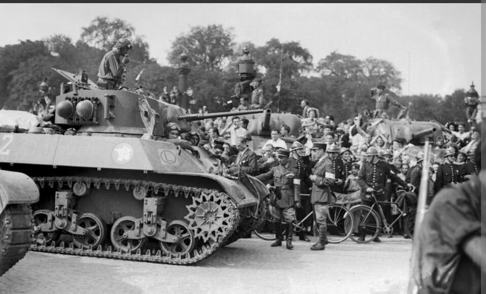
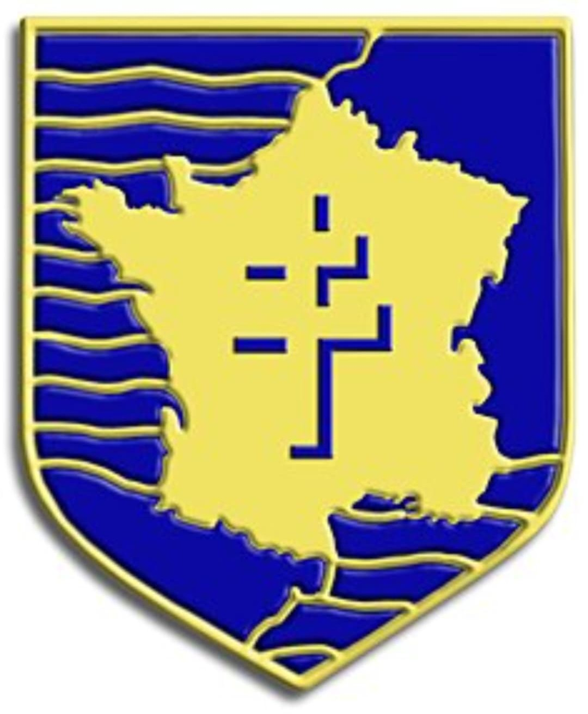
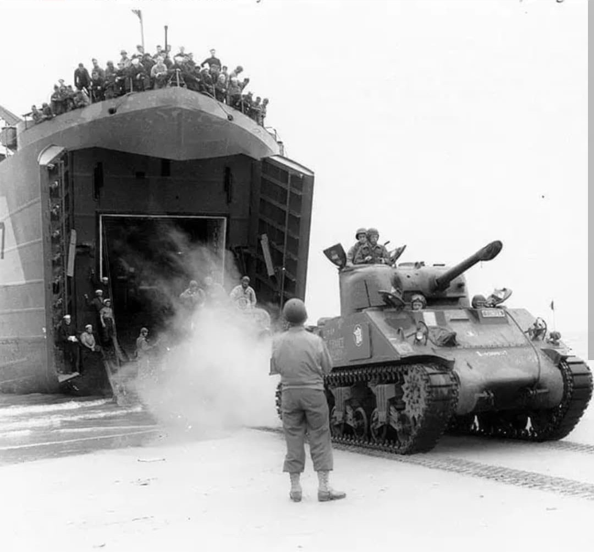
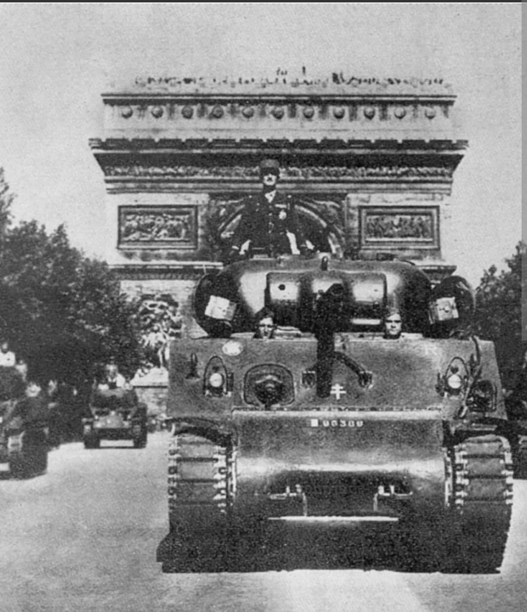

Du serment de Koufra au Nid d'Aigle d'Hitler, les libérateurs de Paris et de Strasbourg

La 2e Division Blindée (2e DB), commandée par le général **Philippe Leclerc de Hauteclocque**, est l'unité la plus mythique des Forces Françaises Libres (FFL) durant la Seconde Guerre mondiale.
Équipée par les États-Unis et rattachée à la IIIe Armée du général Patton, elle s'est illustrée dans la bataille de Normandie, la libération de Paris en août 1944, la campagne d'Alsace avec la prise de Strasbourg, jusqu'à la capture du « Nid d'Aigle » d'Hitler à Berchtesgaden en mai 1945.
L'esprit de la division naît le 2 mars 1941 lors de la prise de l'oasis de Koufra en Libye. Le colonel Leclerc y jure devant ses hommes : « Jurez de ne déposer les armes que lorsque nos couleurs, nos belles couleurs, flotteront sur la cathédrale de Strasbourg. »
Officiellement créée au Maroc en août 1943, la 2e DB regroupe une grande diversité de combattants : évadés de France, tirailleurs africains, la Nueve (républicains espagnols), spahis, marins de la NRF et engagés volontaires du monde entier.

La 2e DB débarque le 1er août 1944 sur la plage d'Utah Beach (Saint-Martin-de-Varreville). Intégrée au 15e corps américain, elle s'engage rapidement dans la bataille de Normandie.
Elle s'illustre lors de la fermeture de la **Poche de Falaise-Argentan**, menant de durs combats face aux unités SS à Alençon, Écouché et dans la forêt d'Écouves pour encercler les forces allemandes en retraite.

Face à l'insurrection parisienne déclenchée le 19 août, le général Eisenhower autorise la 2e DB à foncer sur la capitale. Le 24 août au soir, les premiers éléments de la **Nueve** (capitaine Dronne) atteignent l'Hôtel de Ville.
Le 25 août 1944, la division investit la ville, force la reddition du général von Choltitz et offre à la France le symbole de sa capitale libérée par ses propres soldats, concrétisé par le défilé du général de Gaulle sur les Champs-Élysées le 26 août.

Poursuivant sa route vers l'est, la division traverse les Vosges et prend d'assaut **Strasbourg** par surprise le 23 novembre 1944. Le drapeau français est hissé sur la cathédrale, accomplissant le serment prononcé à Koufra trois ans plus tôt.
En mai 1945, la 2e DB termine son épopée en Bavière en atteignant **Berchtesgaden** et en investissant le « Nid d'Aigle » (Kehlsteinhaus) d'Adolf Hitler.
Au cours de sa campagne, la 2e DB aura perdu plus de **1 600 hommes** tués au combat et comptabilisé plus de 4 500 blessés. Elle a détruit des centaines de blindés ennemis et fait des dizaines de milliers de prisonniers.
Fait unique, la division a été faite **Compagnon de la Libération**. Son souvenir reste gravé dans l'histoire française à travers la voie de la 2e DB qui retrace son parcours d'Utah Beach jusqu'en Alsace.
Page du Musée HOP WW2 – Section France & Unités de Légende